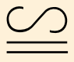
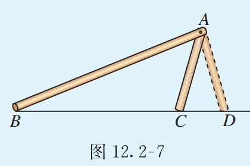
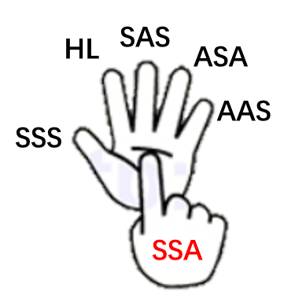
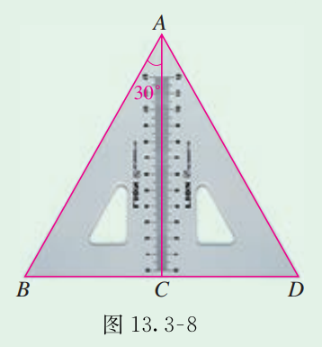
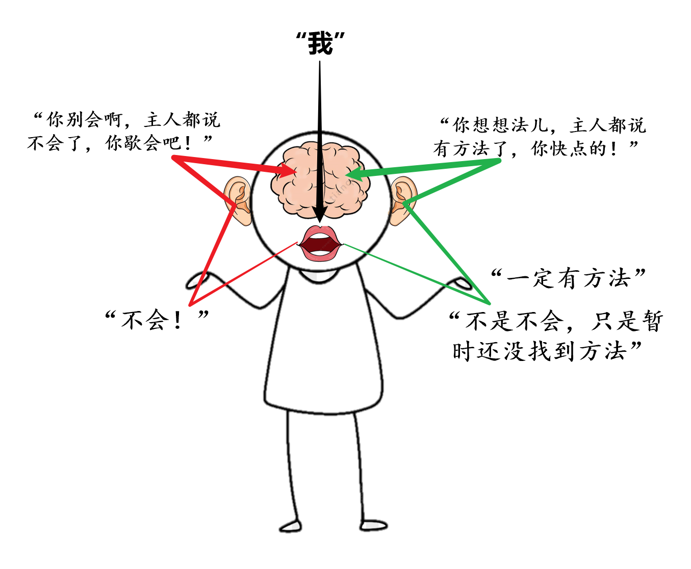
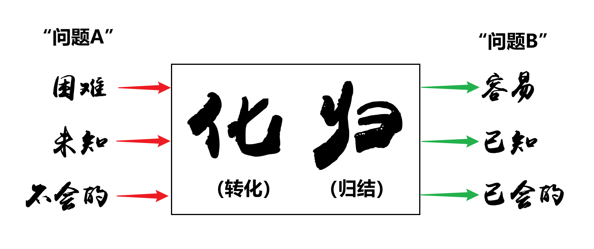
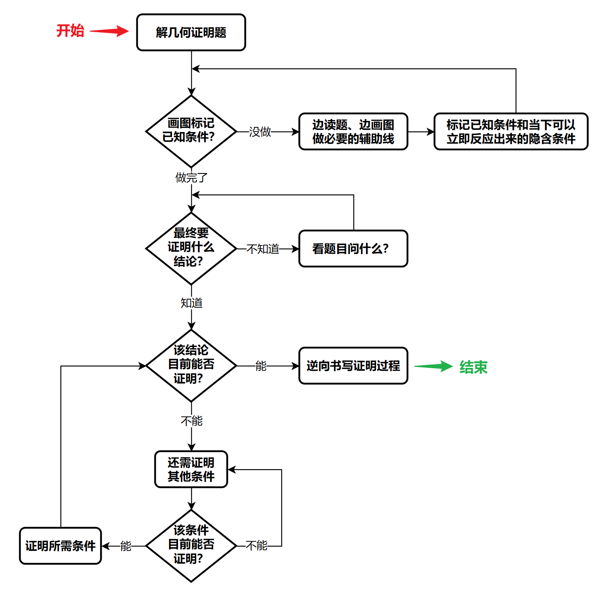

初中数学第十一章 三角形11.1 与三角形有关的线段11.2 与三角形有关的角11.3 多边形及其内角和第十二章 全等三角形12.1 全等三角形12.2 三角形全等的判定12.3 角的平分线的性质第十三章 轴对称13.1 轴对称13.2 画轴对称图形13.3 等腰三角形13.4 课题学习 最短路径问题第十四章 整式的乘法与因式分解14.1 整式的乘法14.2 乘法公式14.3 因式分解第十五章 分式15.1 分式15.2 分式的运算15.3 分式方程
初中数学的路径：数（“男”），形（“女”），数形结合（“男女结婚”）。→ 建立信心。
学习方法：搞清概念（读教材为主），然后做题（解习题为主）。
（做题：先看答案，能够理解并讲解答案，最后自己做）→ 增强方法。
三角形：三个角（可能是锐角、直角、钝角），三个边（线段）。
内角：三角形内部的角。
三角形内角和=180度。
多边形：多条边的形。
三角形的标准数学画法：大写字母标记角（ABC），两个角的大写字母结合标记边（AB、BC、AC），也可以用小写字母标记边（abc）。
注意：标记边的小写字母时，选取那些不是所在边的标记顶点用的字母。
例如，标记AB边时用c，标记BC边时用a，标记AC边时用b。
三角形的标准数学记法：△+三个角，例如△ABC、△DEF。
三角形按角分：锐角三角形、直角三角形、钝角三角形。
三角形按边分：等腰三角形、等边三角形、三边都不相等的三角形。
注意：等边三角形也是等腰三角形，是特殊的等腰三角形。
三角形两边的和大于第三边。（因为“两点之间，线段最短”，走另外两边一定绕路，绕路就一定远，就一定不是最短）
三角形两边的差小于第三边。（通过“三角形两边的和大于第三边”的不等式移项可证，由不得你不相信）
方程思维：题目条件中出现“什么和什么相等”、“什么是什么” …… 其中必蕴含等式关系，有等式关系即可列出方程。（因为方程不过就是包含未知数的等式）
P3例题思路：将题目中的中文描述，理解后转换为“什么和什么一定是相等的”。
- 看到“用一条长为18cm的细绳围成一个等腰三角形”，我就知道这个三角形的三条边加起来和18一定是相等的，而且，三角形的两个腰一定是相等的。
- 看到“腰长（￥10一张钱）是底边长的2倍（￥5两张钱）”，我就知道腰和底边长的2倍一定是相等的。
三角形的高：从三角形的一个顶点向对边做的垂线段。（别忘了标记垂足，给一个大写字母）
锐角三角形的高直接做垂线段，直角三角形的高有两条是它的直角边，钝角三角形的高有两条是要做到三角线外面的。
三角形的中线：在三角形一个顶点的对边上做中点，连接该顶点和中点形成的线段。
三角形的重心：三角形三条中线的交点。
三角形的角平分线：从三角形的一个顶点向对边做的线段，该线段要能够平分该顶点处角的角度。（角平分线就是“角”、“平分”、“线”）
三角形具有稳定性，四边形（多边形）不具有稳定性。
但是，稳定性和不稳定性都有用。稳定性（钢架桥），不稳定性（伸缩门）。
三角形内角和定理：三角形三个内角的和等于180度。
证明方法：过三角形的任一顶点做对边的平行线（l），通过内错角等量代换三个内角组成平角，由平角定义（180度）即可证明三角形三个内角的和等于180度。
※ 数学中，“数”即代数，“形”即“几何”。
解题技巧：解几何题时，念题目的同时，手要在图形上比划（最好同时将已知条件标记在图上），以便理解题意。
直角三角形可用符号Rt△表示，直角三角形ABC可以写成Rt△ABC（英语中“直角三角形”是“Righttriangle”）。
互余：互为余角，余角就是用90度减去我角本身剩余的角。
例如，45度和45度互余，30度和60度互余，25度和65度互余。
记忆诀窍：因为在直角三角形中已经有一个90度，内角和为180度，所以只剩下90度给另外两个角去瓜分，所以另外两个角互为余角。
由三角形内角和定理可得：有两个角互余的三角形是直角三角形。
定理就是“废话”，“废话”就是定理，“废话”的隐含意义就是绝对正确（真理）。
三角形的外角：平角减去内角得到的角。（内角与外角拼成平角）
由三角形内角和定理可得：三角形的外角等于与它不相邻的两个内角的和。（三角形任一角的外角等于另外两个内角的和）
证明方法1：通过过顶点做底边的平行辅助线，利用内错角拼出相等关系。
证明方法2：通过三角形内角和定理和外角的等量关系，推导出上述推论。
※ 解题技巧：遇到比较长的带未知数的已知条件时，莫慌！只需按照定理（本题是三角形内角和定理）老老实实列方程，然后一通操作解方程即可。（P16.1.(4)）→ 心态要稳
※ 解题技巧：遇到“形”的角度问题，不要局限于图中已有的“形”，尝试将思路打开，做些辅助线、延长线等等，利用内错角、对顶角等性质，快速解题。（P17.10）→ 做辅助线
※ 解题技巧：遇到一些棘手的、不知道有什么用的条件时，先标记在图上（最好是形成自己的一套标记风格或方案），也许标着标着，答案就在眼前。（P17.11）→ 标记上图
多边形：由多条边（线段）【首尾】【顺次（按顺序）】【相接】组成的【封闭】图形。
多边形的内角和外角，参考三角形的内角和外角进行理解。
多边形的对角线：连接多边形不相邻的两个顶点的线段。（三角形没有对角线）
凹多边形：有两条边顶进中心的多边形。
凸多边形：不是凹多边形的多边形。（饱满的多边形）
正多边形：各条边都相等的多边形。（正方形也叫正四边形，正三角形即等边三角形）
多边形的内角和：可以通过在内部画对角线，拆分为多个三角形进行推算。（三角形内角和定理）
多边形内角和公式：多边形内角和等于(n-2)×180度。
3→180→1×180
4→360→2×180
5→540→3×180
6→720→4×180
…
n→？→(n-2)×180
互补：互为补角，两个角的和为180度，理解为两个角互相补充。
例如，45度和135度互补，90度和90度互补，120度和60度互补。
多边形外角和定理：多边形外角的和等于360度。
证明方法：多边形外角和与内角和的和（
180n），减去内角和（180(n-2)），得出外角和等于360度（180n-180(n-2)=360）。
辅助记忆：想象一个人围着一个多边形的花坛绕一圈，最终回到原点，这个所绕的角度，其实就是多边形外角的和，无论是几边形，一圈就是360度。
全等形：形状、大小都相同（全部都相等）的形。
全等形（精确）：能够完全重合的两个图形。
全等三角形：能够完全重合的两个三角形。
对应顶点：两个全等三角形重合的顶点。
对应角：两个全等三角形重合的角。
对应边：两个全等三角形重合的边。
“对应”的含义就是“一对儿”。
全等号：，读作“全等于”。例如△ABC和△DEF全等，就记作“△ABC△DEF”。
“=”代表数字相等，“”代表形状相等，上面的“S”就象征图形。
注意：书写两个三角形全等时，两个三角形一般按照对应角的顺序书写。例如“△ABC△DEF”，则∠A=∠D，∠B=∠E，∠C=∠F，AB=DE，BC=EF，AC=DF。
全等三角形的性质：全等三角形的对应边相等、对应角相等。
三边分别相等的两个三角形全等（简称“边边边”或“SSS”，英语中“边”是“Side”）。
理解：三条对应边都相等，边与边分别重合，则两个三角形一定完全重合。
通过直尺画对应的底边，通过圆规画剩下两条对应边。
没有圆规，可以用手指卡住两只笔，以一只笔的笔尖做圆心，转动纸张，用另一只笔的笔尖画圆。
两边和它们的夹角分别相等的两个三角形全等（简称“边角边”或“SAS”，英语中“角”是“Angle”）。
理解：两条边的夹角一旦设定，则两条边的延长方向也被同时设定，两条边的长度一旦确定，则第三边的长度只有一种情况，所以这样的两个三角形一定完全重合。
两边和它们的对角分别相等的两个三角形不一定全等（简称“边边角”或“SSA”）。
注意：如果这个角不是两边的夹角，而是一边的对角，尽管以该对角作为夹角的两条边，两条边的延长方向已被设定，但是第三边（对角的对边）只要不是直角边，其长度就会像一个“海盗船”一样，会出现两个落点，形成的两个三角形不完全重合。

两角和它们的夹边分别相等的两个三角形全等（简称“角边角”或“ASA”）。
理解：两个对应角都相等了，则第三个角一定对应相等，如果两个三角形的对应角都相等，只不过是大小有可能不一样，如果再有一条边相等，则只能等比例放缩，所以这样的两个三角形一定完全重合。
两角分别相等且其中一组等角的对边相等的两个三角形全等（简称“角角边”或“AAS”）。
理解：思路与“角边角”相同。
斜边和一条直角边分别相等的两个直角三角形全等（简称“斜边、直角边”或“HL”，英语中“斜边”是“Hypotenuse”，“直角边”是“Leg”）。
理解：这就是“边边角”中，第三边（对角的对边）是直角边的情况，就不会出现“海盗船”的情况，所以这样的两个三角形一定完全重合。
总结：证明三角形全等一共有6种方法，分别为 SSS、HL、SAS、ASA、AAS 和 SSA 。

左手代表可以证明三角形全等的5种方法，右手代表唯一的那一种不一定能证明三角形全等的方法。
记忆诀窍（左手）：
- 大拇指：代表最普通、最常见，指定为SSS。
- 食指：能够轻易和大拇指掰成直角，指定为HL。
- 中指：最长，所以能顶出个尖儿（扑克中的A）来，那么两“边”的手指就是“边”，指定为SAS。
- 无名指：中指为尖，无名指为边，自然导出小拇指为角，指定为ASA。
- 小拇指：最后一根“把边儿”的手指，也就是最后为“S”，指定AAS。
记忆诀窍（右手）：
- 食指：和左手食指（HL）对应，指定为SSA。
※ 数学中，证明过程中的 “因为∵”、“所以∴” 一定要具备严密的逻辑（思维的路径、推导的过程）关系，不能乱用，如果“因为”推导不出“所以”，就会导致一种非常滑稽的情况，所谓“驴唇不对马嘴”、“风马牛不相及”。
解题技巧：证明题的解题过程，更像是“大师傅炒菜”，一定要先把“各种料”（最终证明所需的全部条件）提前备好待用，最后“一勺烩”（证明结论的最后一步）。解证明题的思路，一句话：“葱切段儿，姜切片儿，最后一炒就出锅！”
※ 解题技巧：证明三角形全等时，尤其要注意两个三角形摆放时形成的完全重合的“公共边”、“公共角”等隐含条件。（P44,第8题）
※ 解题技巧：任何证明题，先画图、再标记，从要证明的结论出发，思考“如果满足什么条件，则结论将成立”，然后顺藤摸瓜去寻找和整理所需要的条件（有时需要做辅助线），最后“一勺烩”。（P44,第8题）
解证明题的“三个锦囊”：
- 已知条件都在图上标记好了吗？（标好了吗？⇒ 2）
- 你现在要做什么来着？（做啥来着？⇒ 3）
- 什么条件满足，就能证明结论？（缺啥条件？⇒ 2）
轴对称图形：沿某条直线（对称轴）折叠能够完全重合的图形。
注意：该图形可以是一整个图形（中间切一刀），也可以是两个图形（照镜子）。
对称点（对应点）：折叠后重合的点（沿对称轴对称的点）。
线段的垂直平分线：经过线段中点并且垂直于这条线段的直线。
注意：只有线段才有垂直平分线，因为线段的长度是固定的。
轴对称图形性质：轴对称图形的对称轴是任何一对对应点所连线段的垂直平分线（对称轴是垂直平分线）。
线段垂直平分线的性质1：线段垂直平分线上的点到该线段的两个端点的距离相等。
线段垂直平分线的性质2：到线段两个端点距离相等的点在这条线段的垂直平分线上。
记忆各类性质、定理，不要死记硬背，尝试以图形图像的方式，在虚空中画出，以刺激大脑记忆。
- 角平分线性质：点在线上则到边等距，到边等距则点在线上。
- 线段垂直平分线性质：点在线上则到端等距，到端等距则点在线上。
轴对称图形画法：先画出所有关键位置上的对称点，再将对称点按原图形状连线。
在平面直角坐标系上画图，以坐标的形式标记图形的端点。（数形结合）
复习：点的坐标（x,y）遵循的是“先横后纵”，也就是现在横轴找位置，再在纵轴找位置。所以，“坐标”又叫“横纵坐标”。
坐标系上的点关于坐标轴对称的规律：关于哪轴对称哪轴不变，另一轴变相反数。
等腰三角形：有两边相等的三角形。
等腰三角形性质1：底角相等。（“等边对等角”）
等边对等角的意思是：有两条边相等的三角形（等边），两条边对应的角也相等（等角）。
有两条边相等的三角形不就是等腰三角形吗？两条边对应的角不就是等腰三角形的底角吗？所以“等边对等角”就是性质1说的“等腰三角形的底角相等”。
※ 解题技巧：利用等腰三角形底角相等，三角形内角和等于180度，解三角形各内角度数。（P76,例1题）（P77,第3题）
等腰三角形性质2：顶角平分线、底边中线、底边高重合。（“三线合一”）
证明性质1、性质2，可以通过证三角形全等实现。
等腰三角形的判定：两角相等则对边相等。（“等角对等边”）
证明一个三角形是等腰三角形，可以证两边相等，也可以证两角相等。
等边三角形：三边都相等的特殊的等腰三角形。
等边三角形性质：三个内角都相等，每个角都等于60度。（“等边对等角”）
等边三角形的判定1：三个角都相等的三角形是等边三角形。（“等角对等边”）
等边三角形的判定2：等腰加一个角是60度就是等边三角形。（ 原创 “等腰60度等边”）
证明一个三角形是等边三角形，可以证三边相等，可以证三角相等，还可以证是等腰三角形加一个角是60度。
直角三角形性质：30度角所对直角边等于斜边的一半。（ 原创 “Rt半角对半边”）

※ 思维习惯（言出法随）：不是不会，只是暂时还没找到方法！
人不是受大脑控制，而是人控制大脑。人说出的话，被自己的耳朵听到，形成对大脑的指令。
例如，当你控制嘴说出“不会”二字的时候，耳朵听到就会告诉大脑“你别会啊，主人都说不会了，你歇会吧！”，那就真不会了。
例如，当你控制嘴说出“一定有法儿”的时候，耳朵听到就会告诉大脑“你想想法儿！”，虽然现在不会，但总有一天会找到方法，不会的东西就会了。

※ 解题思路（化难为易）：化归！将困难的、还不会的问题A，转化归结为简单的、已经会的问题B，通过解决问题B，最终解决问题A。
例如，你现在只会救火，就是说着火了你会救，不着火不知道怎么做。那么，现在有一堆柴火正在冒烟（还没着火），你该怎么办？所谓化归的思想，就是“想办法先把冒烟的柴火点着，然后再灭火！”

整个初中数学的核心解题秘籍： 不想会不会，只想找方法，方法叫化归！

区分性质、判定和定义。
性质（从结论到条件）：你是什么，你就有什么性质（特质、特点）。
例如，猪有长肉的性质，即首先说你是猪，才能说你有长肉的性质。
例如，角平分线上的点到角两边的距离相等，首先得是角平分线上的点，然后才有到角两边距离相等的性质。
判定（从条件到结论）：你满足什么条件，你就是什么。
例如，如果你有学生，那你就是老师。
例如，如果有一条线，线上的任意一点到角两边的距离相等，那么这条线就是角平分线。
定义（起名儿）：给一个名词绑定一个意义，下定义就是解释名词的含义。定义一般通过判定的方式去描述。
乘方：n个相同因数的乘积。
幂：乘方的结果。如，23读作“2的3次方”，也可以读作“2的3次幂”。
乘方有两个含义，一是作为运算方法看，就是指一个数自己乘自己很多次；二是作为运算结果看，就是谁的几次方。
幂只有一个含义，就是乘方的运算结果，所以当乘方也作为运算结果看时，“谁的几次方”也可以说成“谁的几次幂”。
杨幂的父亲杨晓林，还有母亲杨春玲都姓杨，所以杨幂作为最终的“运算”结果，就因为“杨的3次方”而取名了。
底数：乘方中的因数。
指数（次数）：乘方中的因数自乘（自己乘自己）的次数。
单项式：数或字母的积。
多项式：多个（至少2个）单项式的和。
项：项目。“堆儿”。
单项式：数或字母乘一块儿堆儿。（乘号可以省略，形式上就像一堆数或字母紧密相连，“密接”、“贴贴”）
多项式：多块儿堆儿拼一起。（多个密接，在一个地方隔离，把他们聚到一起）
另一种比喻方式：单项式就是一个个乐高积木的元件（有复杂的，也有简单的），多项式就是用这些元件拼接搭建起来的东西（可能是半成品，也可能是成品）。
多项式的次数（最高次）：多项式中次数最高的单项式的次数。
整式：单项式和多项式的统称。
乘号（省略）相连的式子叫单项式。
加号（减号实际上就是加一个负数，也算加）相连的式子叫多项式。
幂的运算法则：
同底数幂的乘法（同底数幂相乘）：底数不变，指数相加，am·an=am+n（m、n是正整数）。
am相当于m个a自己乘自己，an相当于n个a自己乘自己，两堆儿相乘，相当于m+n个a自己乘自己，也就是a乘以自己乘了m+n次，所以结果是am+n。
幂的乘方（乘方再乘方）：底数不变，指数相乘，(am)n=amn（m、n是正整数）。
(am)n相当于n个am自己乘自己，转化为同底数幂的乘法，即可得知n个am自己乘自己等于amn，所以结果是amn。
积的乘方（多个因数相乘的积再乘方）：因数分别乘方，所得幂再相乘，(ab)n=anbn（m、n是正整数）。
(ab)n相当于n个ab自己乘自己，因为乘法满足交换律（即因数的顺序可以交换），所以n个ab自己乘自己就是n个a相乘，再乘以n个b相乘，结果就是an乘以bn。
整式乘法的运算法则：
单项式与单项式相乘：数乘数，乘以，字母（的幂）乘字母（的幂）。
乘法交换律，乾坤大挪移。
单项式与多项式相乘：拆括号，分配律，逐个相乘再相加。
左手指月：“左手指着，右手照抄”（左手拿起你，右手放下你：左手指着拿起一个单项式，右手把它放下抄到纸上）
计算守则：不能用眼珠子瞪，而要左手指着每个项，右手拿笔照抄，不要把正负号搞错！
多项式与多项式相乘：拆括号，分配律，转化为单项式乘多项式再算。
推导过程：把其中一个多项式想象成一个“大黑盒”，当作一个整体进行运算，拆出来之后再复原，你就想明白了。
数学，是化简的艺术。
多项式乘法关于负号运算的解决方案：
（1）负号变正号（用小括号括起来），原题中的小括号对应变成中括号。
（2）算到最后，将负号取出，该消的消。
真正能使人做好一件事的根源，不是兴趣，不是努力，也不是天赋，而是一颗勇于不断挑战的心！
—— 李毅
（完）